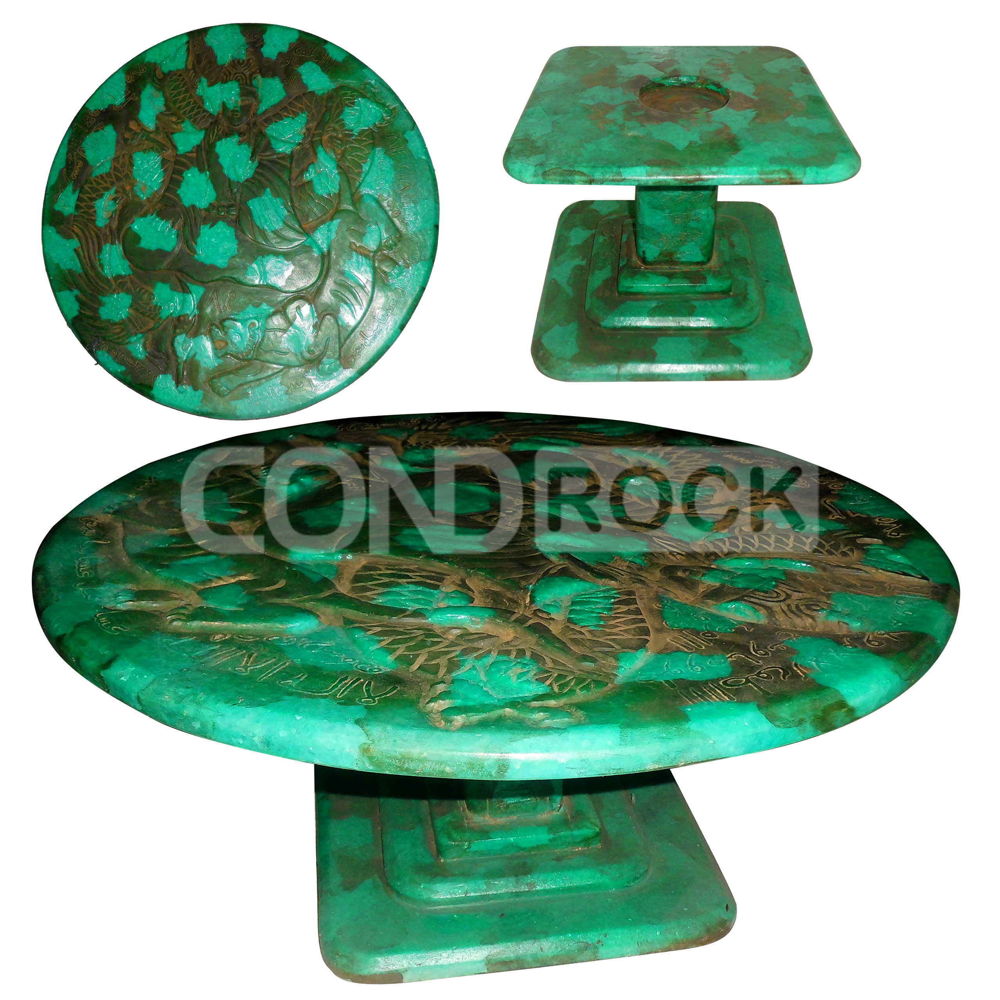

Meja Batu Hijau Ukir Naga
Dekorasi klasik bernuansa Tiongkok, terbuat dari batu hijau solid dengan ukiran naga langsung pada batu.
Hubungi via WhatsApp
Deskripsi Produk
Dijual sebuah meja / pedestal batu hijau natural dengan ukiran naga khas Tiongkok. Produk ini terbuat dari batu solid alami (bukan resin atau plastik), terasa berat, kokoh, dan dingin saat disentuh.
Warna batu hijau alami dengan corak mineral yang tidak seragam, menjadikan setiap sisi memiliki pola unik. Ukiran naga dibuat langsung pada batu, bukan tempelan atau cetakan.
Cocok digunakan sebagai meja pajangan, meja altar, atau dekorasi ruangan bernuansa oriental dan feng shui.
Spesifikasi
- Jenis: Meja / pedestal dekorasi
- Material: Batu hijau natural (bukan giok)
- Motif: Ukiran naga (relief)
- Warna: Hijau natural dengan corak mineral
- Tinggi Meja: ± 30 cm
- Diameter: ± 60 cm
- Berat: ± 20 kg
- Kondisi: Bekas, kondisi fisik masih baik
- Catatan: Bukan barang antik bersertifikat
Alasan Produk Ini Layak Dimiliki
Kalau Anda sedang mencari dekorasi yang punya karakter kuat, meja batu hijau ukir naga ini layak dipertimbangkan. Bukan hanya karena tampilannya unik, tetapi juga karena material batu alaminya memberi kesan kokoh, berkelas, dan tidak pasaran.
Tampilan yang berkarakter
Ukiran naga dan warna hijau natural membuat meja ini terlihat menonjol tanpa harus berlebihan.
Material batu asli
Terbuat dari batu solid alami, jadi kesannya lebih kokoh dan punya nilai visual yang berbeda dari bahan biasa.
Cocok untuk banyak fungsi
Bisa dipakai sebagai meja pajangan, altar, atau elemen dekoratif ruangan bernuansa oriental.
Pilihan yang tidak pasaran
Kalau Anda suka barang dengan cerita dan tampilan yang khas, produk ini terasa lebih spesial dibanding dekorasi umum.
Intinya: ini cocok untuk Anda yang ingin punya dekorasi batu alam yang terlihat elegan, unik, dan tetap fungsional tanpa perlu penjelasan berlebihan.
Lokasi
Jalan Gg Masjid Sirojul Huda Arah Sampora, RT.4/RW.5, Leuwinutug, Kecamatan Citeureup, Kabupaten Bogor, Provinsi Jawa Barat Kode pos: 16810.
Siap Antar
Pengiriman dilakukan langsung oleh penjual secara pribadi, jadi prosesnya lebih fleksibel dan bisa dibahas dengan santai sesuai kebutuhan Anda.
Karena produk berbahan batu dan cukup berat, kami akan pastikan proses penyerahan dan pengemasan dibuat seaman mungkin sebelum dikirim atau diantar.
Tertarik dengan Produk Ini?
Silakan hubungi langsung untuk detail ukuran, berat, harga, dan pengiriman.
Chat WhatsApp Sekarang